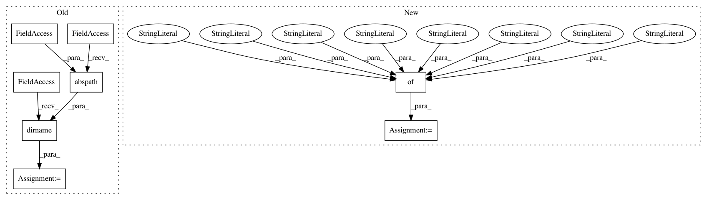

206798edabf99a8ee4bb03ffba25968d2057bb18,setup.py,,,#,19
Before Change
sha = "Unknown"
package_name = "kornia"
cwd = os.path.dirname(os.path.abspath(__file__))
try:
sha = subprocess.check_output(["git", "rev-parse", "HEAD"], cwd=cwd).decode("ascii").strip()
except Exception:
After Change
// the oldest one is the requirement. The versions should be inequalities.
// Once a pytorch version (in the future) breaks a kornia version, we could just
// add a maximal version.
kornia_pt_dependencies = {
"0.3.2": ">=1.5.0,<1.6.0", // torch==1.6.0 broke test/geometry/transform/test_crop.py
"0.3.1": ">=1.5.0",
"0.2.2": ">=1.4.0",
"0.1.4": ">=1.2.0",
}
// version can be overiden eg with KORNIA_BUILD_VERSION so we map each possible kornia version to the dictionary keys
def dep_version(version):
In pattern: SUPERPATTERN
Frequency: 3
Non-data size: 8
Instances
Project Name: arraiy/torchgeometry
Commit Name: 206798edabf99a8ee4bb03ffba25968d2057bb18
Time: 2020-07-30
Author: anguelos.nicolaou@gmail.com
File Name: setup.py
Class Name:
Method Name:
Project Name: MolSSI/QCEngine
Commit Name: fcb2a9e425f2bc873f3f32072b251de63a6e7edc
Time: 2018-08-14
Author: malorian@me.com
File Name: qcengine/tests/test_config.py
Class Name:
Method Name: opt_state_basic
Project Name: MolSSI/QCEngine
Commit Name: 86657ce824ee70a03b43f218de2220bd36fefc4e
Time: 2018-08-14
Author: malorian@me.com
File Name: qcengine/tests/test_config.py
Class Name:
Method Name: opt_state_auto